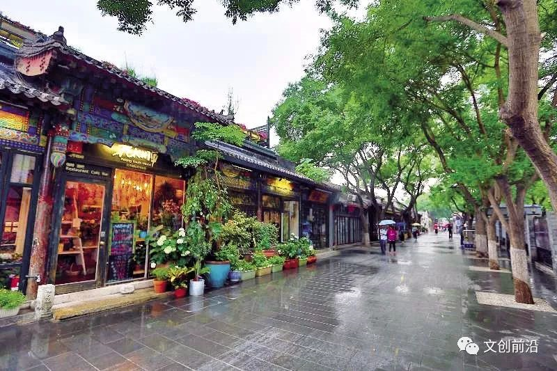
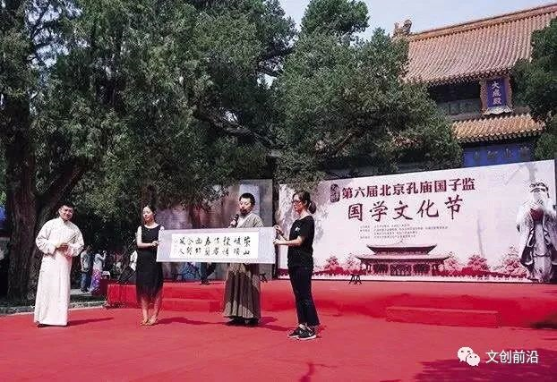
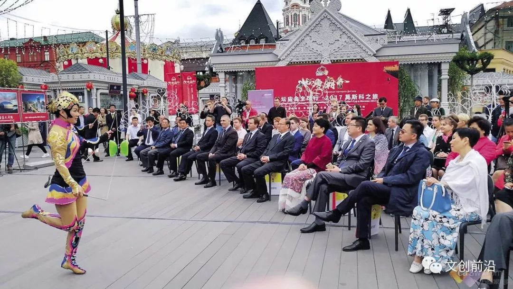
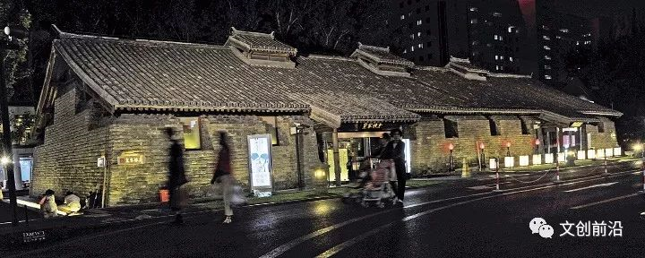
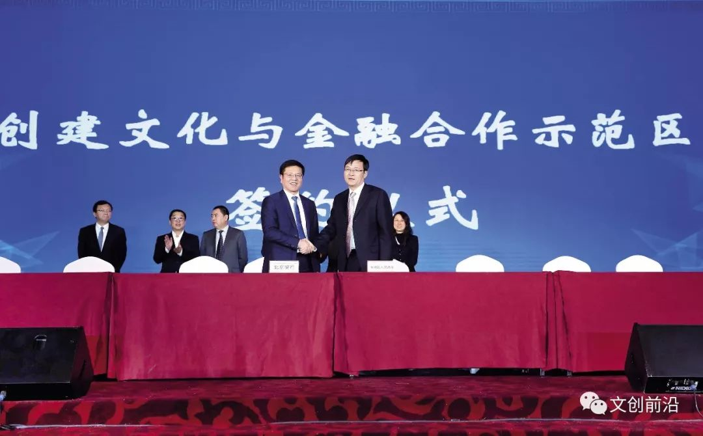

【文创前沿】北京东城：实施文化强区战略 建设全国文化中心集中展示区
来源：文创前沿
周家雷（北京市东城区委常委、宣传部长）
北京市东城区认真学习宣传贯彻落实党的十九大精神，按照市推进全国文化中心建设领导小组工作部署，以实施“文化强区”战略为抓手，努力发挥东城区作为全国文化中心主要承载区的示范引领作用。
文化创意产业规模和效益不断提升，公共文化服务体系愈加完善，风貌保护工作成效日益凸显。“十二五”期间，全区文化创意产业增加值年均增速达到13.8%。2016年，东城区文化创意产业实现增加值283.7亿元，占地区生产总值的比重为14.12%，文化创意产业收入1893.0亿元，规模以上文化创意产业法人单位从业人员达到85096人。2017年，辖内中国出版集团、中国教育出版传媒集团成功入选2017年“全国文化企业30强”。中国科技出版传媒集团有限公司、中国出版传媒股份有限公司实现主板上市。文化创意产业已成为全区经济发展的支柱产业，并在文化演艺、艺术品交易、全媒体出版和文化旅游4个领域处于全市领先地位。同时，东城区不断夯实文化基础设施资源，深入推进公共文化服务“供给侧”改革，提升公共文化服务能力和水平，成功创建“国家公共文化服务体系示范区”。目前，东城区基本形成覆盖均衡、便捷高效的公共文化服务设施网络，实现了“十分钟文化服务圈”。
按照市委统一部署，东城区成立了推进全国文化中心建设领导小组，设立东城区推进全国文化中心建设领导小组及办公室，领导小组由区委书记任组长，区长任第一副组长，副组长由区委常委、常务副区长，区委常委、宣传部部长（负责常务工作）和区政府有关副区长担任，办公室设在区委宣传部。设立老城保护组、大运河文化带建设组、文化内涵挖掘组、文化建设组、产业发展组5个专项工作组。制定了《实施“文化强区”战略，推进全国文化中心建设行动计划（2017年—2020年）》，从筑牢思想理论根基、打造特色品牌文化名片、丰富群众精神文化生活、加强历史文化名城保护、建设有国际影响力戏剧中心、大力促进文化创意产业发展6个方面部署了31项具体任务。提出到2020年，“文化强区”战略全面实施，“文化东城”品牌更加响亮，各种文化资源和文化元素充分亮出来、活起来、动起来，“以文化城、文城一体”的城市氛围更加浓厚，东城区成为传统文化和现代文明交相辉映、历史文脉与文化创意相得益彰、市民文化素养和城市文明程度同步提高的全国文化中心集中展示区。
一是传承红色基因，挖掘区域红色文化资源。历经一年时间，在沙滩后街55号原北大数学系楼精心打造“光辉起点·中国共产党早期组织在东城”主题展览，展览面积1400余平方米，展品600余件。在时间上突出建党早期，展览时间跨度从1840年鸦片战争至1927年大革命结束，核心内容集中在党的创建前后，重点宣传展示革命先驱们的建党初心与奋斗历程。在内容上紧扣东城特色，以东城红色遗迹为线索，大力挖掘东城特色的历史内容，重点展示李大钊与马克思主义传播、青年毛泽东进京与接受真理、“南陈北李”相约建党、1926年中共中央北京特别会议在东城召开等。展览开展以来，受到了社会各界的关注，吸引了中央、市、区有关单位前来参观学习，英大财险等央企还专程到此召开党委专题学习会。《北京日报》以专版形式进行了报道。截至目前，共接待参观单位150余家、近3000人次，已成为全区重要党史、党性教育基地。
二是展示文化底蕴，弘扬中华优秀传统文化。成功举办第六届北京孔庙国子监国学文化节，包括国学展示、交流、体验、传播四大板块22场主题活动。其中，作为国学节亮点活动之一的“国粹溯源 华夏留芳”国子监10周年大师讲坛，邀请陈来、楼宇烈等5位国学大家进行授课，吸引近千名文化领域专家、文化机构负责人及文创企业家现场聆听，近338.9万网友在线观看，为广大市民奉上一席内容丰富的国学盛宴。国务院副总理刘延东作出重要批示，指出此次活动坚持以文化人，以文育人，坚持社区教育与大学教育结合，坚持传统教育和网络新媒体融合，探索出一条面向群众、弘扬中华优秀文化的有效途径。
三是整合全国话剧资源，丰富“戏剧东城”内容。东城培育戏剧四季风尚，春季关注原创剧目打造“南锣鼓巷戏剧展演季”，夏季聚焦儿童戏剧举办“中国儿童戏剧节”，秋季以培养青年戏剧创作人才、推出优秀青年戏剧作品为重点，举办“北京青年戏剧节”，冬季着重国际视角打造“北京喜剧节”。特别在2017年12月5日至29日，举办纪念“中国话剧诞生110周年·戏剧东城10周年——全国话剧优秀新剧目展演季”，搭建创作演出交流评选的高位平台。展演剧目是从全国110家话剧院团中征集评选出的18部优秀剧目，均为首次亮相首都舞台，在国家话剧院、首都剧场、北京喜剧院等剧场展演。12月10日，邀请了中国艺术研究院话剧研究所所长宋宝珍、北京人民艺术剧院院长任鸣等文艺界专家，就“贯彻十九大精神 新时代话剧人的使命担当”进行研讨座谈，并发布《东城宣言》。全国话剧优秀新剧目展演季也将作为“戏剧东城”战略的核心项目之一，落户东城长期运营。
四是地坛庙会“走出去”，传播特色鲜明的京味文化。组织中华老字号、非遗、民俗等特色文化项目开展地坛文化庙会台北、莫斯科、德黑兰之旅活动，观众达37.5万人次。活动让当地市民全面深入地体验了中华优秀传统文化，感受到了北京东城的独特魅力，对促进文化交流合作具有十分重要的意义。市委领导对活动给予充分肯定，勉励东城区创新内容和形式，努力将地坛庙会打造成最接地气、最得民心、最受欢迎的对外文化交流品牌，使其成为闪耀世界舞台的中国符号。
一是彰显古都风貌，擦亮古都风貌金名片。完善名城办及文物腾退工作机制，召开区名城委全会，成立区文物腾退领导小组，编制文物腾退工作体系方案，建立文物腾退周调度机制。强化规划引领，编制南锣鼓巷、皇城、东四三到八条等重点历史街区的风貌保护管控导则。开展重点大街、重要地区城市设计，全面推行平房区物业管理服务模式，动员社会力量共治共管。构建历史文化街区三维模型，全方位展现四合院的生长与沿革以及历史文化街区的传统风貌，为区域的保护、规划、修缮提供参考依据。
二是文明创建深入推进，群众拥有更多获得感。组织开展了卓有成效的精神文明建设活动，以优异的成绩通过全国文明城区复查，实现全国文明城区四连冠，结合各类创建标准，创新活动形式、内容，为建设“国际一流的和谐宜居之区”提供了强大精神动力和道德滋养。
三是完善公共文化服务体系，巩固公共文化服务体系示范区创建成果。制定《北京市东城区加快推进公共文化服务体系示范区后续行动计划（2017—2020年）》《东城区文化委员会“艺+1”全民艺术普及工作意见》。加强重点文化设施建设，文化活动中心工程完成90%，角楼图书馆正式开馆，文化遗产博物馆内部装修已完工，推进数字化图书馆、公共文化数字服务平台和管理平台建设。
四是喜迎党的十九大，开展文艺精品创作。举办“拥抱新时代，唱响新东城——‘东韵正声’东城区原创优秀歌曲展演”，从全区89首原创音乐作品中精心筛选、细致打磨出18首展现东城特色和人文风情的歌曲，用原创音乐作品为党的十九大放歌。创作快板《纵情高歌十九大》、单弦《小巷风波》等文艺作品，拍摄微电影《警察爸爸》《追梦景泰蓝》分获第五届亚洲微电影艺术节金海棠奖一等奖和品牌微电影奖。原创话剧《皇城根下》《留取丹心》《玩家》受到市民的广泛欢迎。
一是积极创建文化与金融合作示范区并取得重要进展。2017年11月，市政府正式批复同意推荐东城区代表北京市申报国家文化与金融合作示范区，并建立国家、市级相关部门协调联动机制。筹备设立东城区文化与金融合作示范区产业引导基金，引导社会资本共同参与示范区建设，探索成立文创产业信用联盟和文创银行，对文创银行、风险补偿基金等方案的可行性进行研讨。推进文化要素市场建设，北京文化产权交易中心影视产权交易平台正式启动，建立了多元化产品体系和完整的交易制度。
二是认真落实《东城区文化创意产业发展专项资金管理办法》。今年区委区政府审核批准29个项目，支持资金2208万元。积极促成北京银行首家文创专营支行落户东城区歌华大厦，光大文化等一批龙头企业落户前门地区。支持嘉德艺术中心建设项目，成功举办嘉德典雅艺术周。
三是成功举办2017北京文创产业投融资年会暨文化金融合作峰会。围绕“新时代文化中心建设的金融担当”主题，文创企业、投资机构、银行、券商、媒体代表近千人参加。借助峰会平台，东城区与人行营管部、北京证监局等单位签订战略合作备忘录，建立了长效合作机制；与市文资办、上海证券交易所签订战略合作备忘录，共建北京文创企业上市培育基地；与光大文化、北京银行签订战略合作协议，以龙头企业、重点项目为依托，推动东城区文化产业健康快速发展，打造文化金融合作发展的示范高地。（SYK-WY）